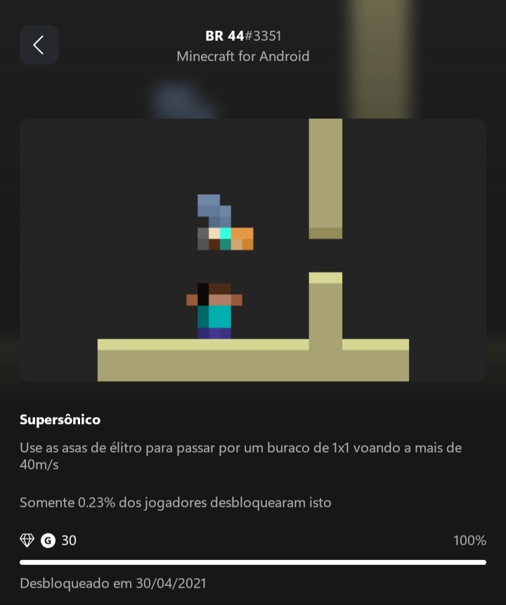
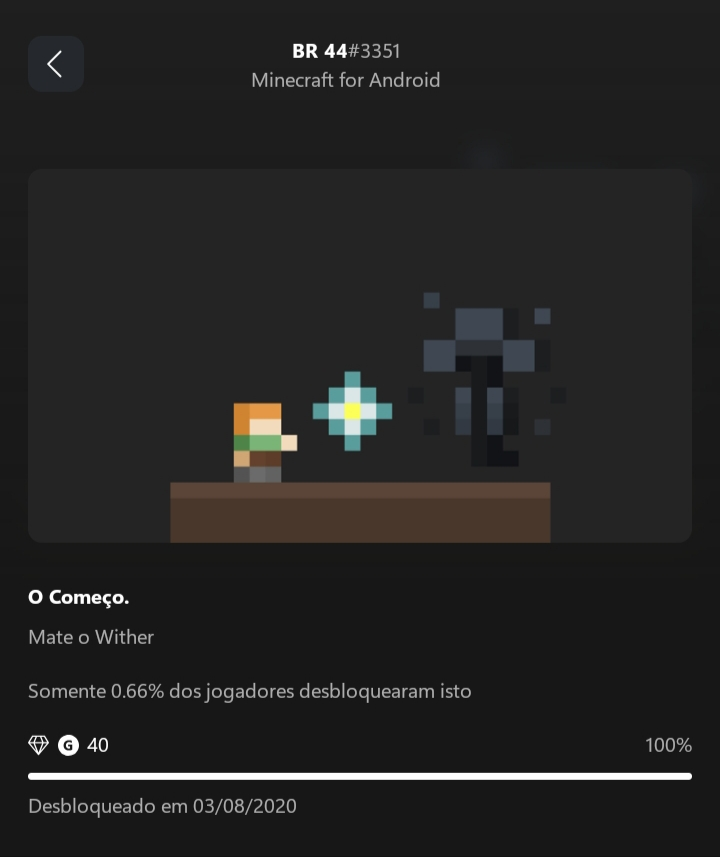
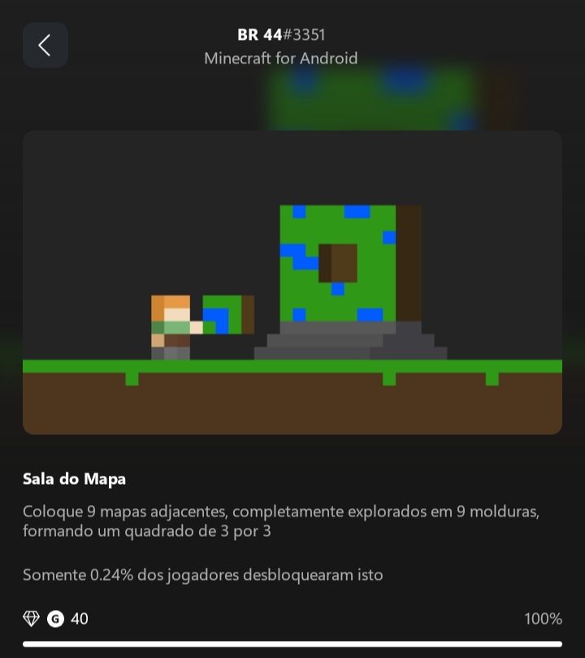

conquistas

Super Sonico
para obter conquista super sonico e necessario usar as asas de elitro e passar a 40m/s em um bloco 1x1

O começo
a conquista "chamada o fim" e consedida apos derrotar o boss chamado, wither, ele e um boss bem forte principalmente nas versoes bedrock

sala do mapa
Para obter a conquista "Sala do Mapa", você precisa criar um quadrado de 3x3 mapas explorados, cada um em uma moldura. Os mapas devem estar adjacentes e totalmente explorados, formando um layout 3x3.